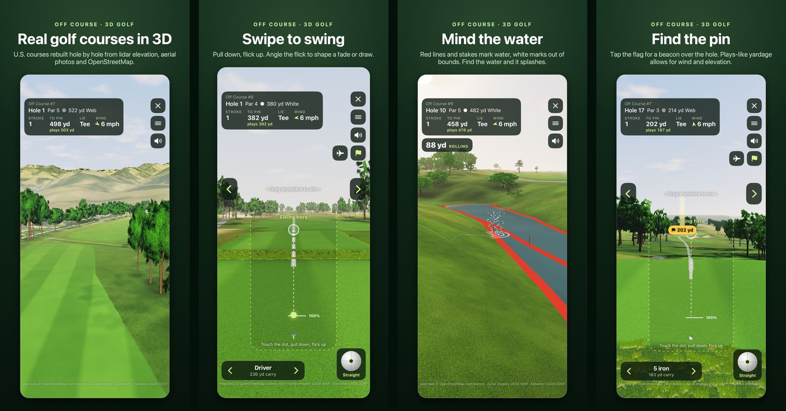

3D golf for iPhone and Android
Real golf courses.
Rebuilt in 3D.
Help for Off Course: 3D Golf. Off Course rebuilds real U.S. golf courses from public lidar elevation, aerial photos and OpenStreetMap, and you play them with a swipe. Off Course #1 is free.

Contact Off Course
A question, a hole that doesn’t look right, or a purchase that didn’t unlock?
eric@craneshire.coInclude your phone model, whether it’s an iPhone or an Android phone, the app version (shown at the bottom of Settings), the course number and hole, and what happened. A screenshot helps. Please leave out passwords, payment details and other sensitive information.
Off Course is published by Craneshire LLC.
Getting started
Off Course needs iOS 17 or later on iPhone, or Android 11 or later on an Android phone. It plays upright or sideways, and on foldable phones folded or open.
- Open Off Course and pick a course. Off Course #1 is free. Each locked course opens with a short tour, then its first hole is yours to play.
- Choose your tees, the wind and whether to show plays-like distance, then start the round.
- Aim by dragging anywhere on the screen, or with the arrows at the sides.
- To swing, touch the dot, pull down and flick up. Angle the flick to shape a fade or a draw.
- To putt, touch the dot, pull back and let go. Tap Read first to study the green.
- Tap the flag button for a beacon over the hole, or the airplane button to fly over the hole from your ball.
Reading the course
Purchases
Off Course #1 is free to play. The All courses purchase unlocks every other course, including courses added in future updates.
- iPhone: the purchase belongs to your Apple Account, so it works on your other iPhones too.
- Android: the purchase belongs to the Google account you bought it with on Google Play, so it works on your other Android phones signed in to that account.
Off Course has no account of its own, so a purchase made on iPhone doesn’t unlock the courses on Android, or the other way round.
To restore it after reinstalling or on another phone, open Settings (top right of the course list) and tap Restore Purchases while signed in with the Apple Account or Google account you bought it with.
Common questions
Is this exactly the real course?
Each course is rebuilt from public data: the ground from U.S. Geological Survey lidar, the fairways, greens, bunkers and water from OpenStreetMap, and the trees from aerial photos and lidar. Public maps can be incomplete or out of date, so a bunker, tree or green slope may differ from the course today. Green slopes and trees are approximate, and the pin is placed at random, not where it is on the day.
Courses are shown by number and nearby town. Off Course isn’t affiliated with or endorsed by any golf club.
Do I need an internet connection?
No. Every course is built into the app, so you can play anywhere. Buying or restoring the All courses purchase needs a connection.
Why did my ball go through a tree?
Trees aren’t solid walls. A ball that clips the edge of a tree can get through, a little slower. Hit the middle and it will probably meet a branch: some shots glance off, others get knocked down.
What is plays-like distance?
The distance a shot plays after the wind and the climb or drop to the pin, worked out with the same ball flight the game uses. The suggested club follows it. You can turn it off in the round setup or in the menu during a round.
Does Off Course use my location?
No. Off Course never asks for location access. See the privacy policy.
My purchase didn’t unlock the courses.
Open Settings from the course list and tap Restore Purchases, signed in with the Apple Account or Google account you bought with. A purchase on one platform doesn’t carry over to the other. If the courses are still locked, email eric@craneshire.co with the date of the purchase.
Data and acknowledgements
Course shapes: map data © OpenStreetMap contributors, available under the Open Database License (ODbL). Elevation: USGS 3D Elevation Program (3DEP) lidar. Aerial photos: USDA National Agriculture Imagery Program (NAIP). Ground cover: LANDFIRE (USGS and U.S. Forest Service) and the National Land Cover Database (USGS). Sounds and surface textures are CC0 recordings and scans from Freesound, ambientCG and Poly Haven.